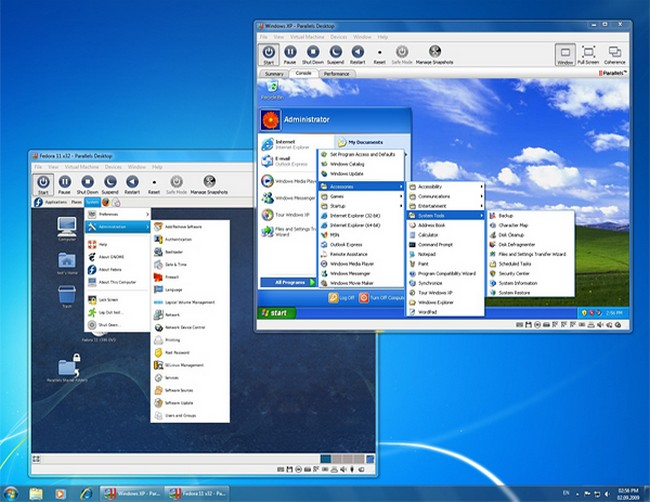

In het Von Neumann schema is er één component waar je een keuze in moet maken die bepalend is voor de programma's die het systeem kan draaien en dat is de processor.
Er zijn namelijk twee types processoren op de markt:
Dit zijn de klassieke processoren die je terug kan vinden in desktops, laptops en servers. Ze worden gefabriceerd door Intel of AMD en kunnen, in theorie, alle software draaien die geschreven is sinds het DOS tijdperk.
Bij dit laatste moeten we natuurlijk een kanttekening plaatsen want de software die geschreven is voor ARM processoren kunnen ze uiteraard niet uitvoeren.
De eigenschappen bij dit type processoren is dat ze erg gericht zijn op het leveren van de beste prestaties maar daartegenover staat dat ze een vrij groot energieverbruik opmeten.
Bij een server, desktop of laptop is dat niet zo erg maar het maakt dat ze minder geschikt zijn voor mobiele apparaten.
x64 is de 64 bit processor variant terwijl x86 (of ook i386) de 32 bit voorganger was. Vandaag de dag worden er geen 32 bit processoren meer verkocht maar je kan ze natuurlijk wel nog hier en daar terugvinden op een fabrieksvloer.
Waarschijnlijk verwacht je dat ARM processoren 'recenter' zijn dan de x86 of x64 tegenhangers. Toch bestaat ARM al sinds 1985. De reden waarom deze nu aan populariteit winnen is natuurlijk door het groot aantal mobiele apparaten zoals smartphones en tablets.
ARM focust zich niet zozeer op prestaties maar wel op een laag energieverbruik en dat is uiteraard een eigenschap waar deze apparaten een groot voordeel bij hebben.
Daarbij komt ook dat ARM iets efficiënter intern opgebouwd is waardoor de kloof tussen ARM en x64 kleiner wordt. Het is zelfs zo dat Apple ondertussen hun laptops uitrust met op ARM gebaseerde processoren. Ook Microsoft heeft al een aantal (tablet) modellen uitgebracht met ARM processoren maar deze hadden weinig succes.
De reden waarom ARM moeilijk aanslaat op desktops en laptops is doordat de applicaties die voor deze machines ontwikkeld werden enkel draaien op x64 processoren. Je koopt dus een energiezuinige ARM laptop maar heel wat software is er niet compatibel mee.
Het is dan aan de software ontwikkelaars om hun programma's volledig opnieuw te schrijven voor ARM processoren (die compatibel zijn met een ARM besturingssystemen) maar gezien de kleine markt voor ARM laptops / desktops zien die daar voorlopig nog niet het nut van in.

Een virtuele machine lost dat niet op. Een virtuele machine is een computer die uit software bestaat en die je op je gewone computer draait.
Nagebootst zijn daarbij de randapparaten: de harde schijf, het dvd-station, de netwerkkaart en de firmware. De processor is dat niet. Een virtuele machine laat de instructies van het besturingssysteem dat erin draait rechtstreeks op de echte processor lopen, en de hardware bewaakt daarbij dat die instructies niet buiten de virtuele machine komen. Ook het werkgeheugen is echt geheugen, waarvan de virtuele machine een stuk toegewezen krijgt.
Een virtuele machine draait dus alleen een besturingssysteem met dezelfde instructieset als de processor eronder. Een x86 of x64 programma op een ARM processor vraagt emulatie: software die elke instructie van de ene instructieset vertaalt naar de andere. Het nadeel is natuurlijk wel dat dit trager zal gaan…